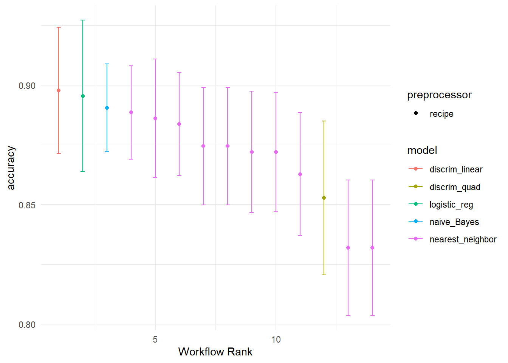
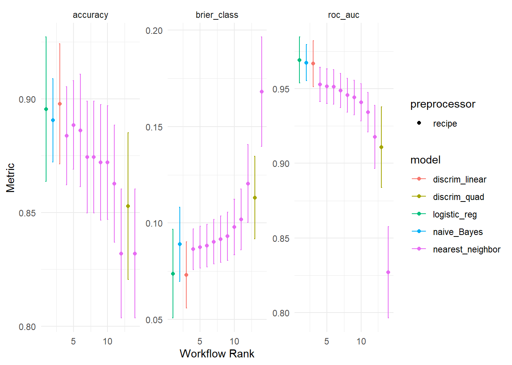

Mostrar código
dados_analise <- dados_analise %>%
mutate(
Court = factor(case_when(
Position %in% c("PG", "SG") ~ "Backcourt",
Position %in% c("SF", "PF", "C") ~ "Frontcourt",
)
)) |>
dplyr::select(-Position)No contexto deste estudo, os jogadores são classificados de acordo com sua função predominante em quadra:
Backcourt: jogadores com maior responsabilidade na condução de bola, criação ofensiva e organização do jogo, tipicamente associados às posições de armador (PG) e ala-armador (SG).
Frontcourt: jogadores com atuação predominante próxima à cesta, maior presença física e participação em ações como rebotes e proteção de aro, geralmente associados às posições de ala (SF), ala-pivô (PF) e pivô (C).

A variável resposta foi construída a partir da posição original do jogador, utilizando a seguinte regra de mapeamento:
Essa transformação permite reestruturar o problema de classificação em um cenário binário, mantendo coerência com o papel desempenhado pelos atletas em quadra.
dados_analise <- dados_analise %>%
mutate(
Court = factor(case_when(
Position %in% c("PG", "SG") ~ "Backcourt",
Position %in% c("SF", "PF", "C") ~ "Frontcourt",
)
)) |>
dplyr::select(-Position)set.seed(16723)
dados_analise_split <- initial_split(dados_analise, prop = .7, strata = Court)
train_data <- training(dados_analise_split)
test_data <- testing(dados_analise_split)Utilizando os mesmos feature engineering do primeiro modelo
dados_analise_rec <- recipe(Court ~ ., data = train_data) |>
step_mutate(
AST_TOV_RATIO = AST / (TOV + 0.1),
REB_HEIGHT_INTER = REB * Altura,
PLAYMAKER_SCORE = AST - TOV,
RIM_PROTECT = REB + BLK,
PTS_EFF = PTS * FG_PCT) |>
step_YeoJohnson(all_numeric_predictors()) |> # Transformação Yeo-Johnson
step_normalize(all_numeric_predictors()) |> # normaliza variáveis numéricas para terem média 0 e variância 1
step_corr(all_numeric_predictors(), threshold = 0.8,
method = "spearman"
) # remove preditores que tenham alta correlação com algum outro preditorprepped_data <- dados_analise_rec |> # usa a receita
prep() |> # aplica a receita no conjunto de treinamento
juice()# extrai apenas o dataframe preprocessadoUtilizando o método k-fold cross validation para construir um conjunto de validação com k-folds. Considerando k = 10.
cv_folds <- vfold_cv(train_data, v = 10, strata = Court)knn_spec <- nearest_neighbor(neighbors = tune()) %>% # K-NN
set_engine("kknn")%>%
set_mode("classification")
nbayes_spec <- naive_Bayes() %>% # Naive Bayes
set_engine("naivebayes") %>%
set_mode("classification")
logistic_spec <- logistic_reg() %>% # RL
set_engine(engine = "glm") %>%
set_mode("classification")
lda_spec <- discrim_linear() %>% # Linear discriminant analysis
set_engine("MASS") %>%
set_mode("classification")
qda_spec <- discrim_quad() %>% # Quadratic discriminant analysis
set_engine("MASS") %>%
set_mode("classification")wf = workflow_set(
preproc = list(dados_analise_rec),
models = list(
knn_fit = knn_spec,
nbayes_fit = nbayes_spec,
linear_fit = logistic_spec,
lda_fit = lda_spec,
qda_fit = qda_spec
)
) %>%
mutate(wflow_id = gsub("(recipe_)", "", wflow_id))grid_ctrl = control_grid(
save_pred = TRUE,
parallel_over = "resamples",
save_workflow = TRUE
)
grid_results = wf %>%
workflow_map(
seed = 16723,
resamples = cv_folds,
grid = 10,
control = grid_ctrl
)Usando a acurácia no conjunto de validão de acordo com o melhor conjunto de hiperparâmetros obtido para cada modelo.
autoplot(grid_results, metric = "accuracy")
Ordenando pelos melhores
autoplot(grid_results, select_best = TRUE ,metric = "accuracy")
Utilizando outras métricas para avaliar
autoplot(grid_results)
Ordenando os modelos pela métrica de acurácia no conjunto de Validação
results_acc = workflowsets::rank_results(grid_results,
select_best = TRUE,
rank_metric = "accuracy") %>%
filter(.metric == "accuracy") %>%
dplyr::select(wflow_id, mean, std_err, model, rank)
results_acc %>% gt()| wflow_id | mean | std_err | model | rank |
|---|---|---|---|---|
| lda_fit | 0.8978000 | 0.01606318 | discrim_linear | 1 |
| linear_fit | 0.8954164 | 0.01928389 | logistic_reg | 2 |
| nbayes_fit | 0.8905437 | 0.01111032 | naive_Bayes | 3 |
| knn_fit | 0.8884977 | 0.01185536 | nearest_neighbor | 4 |
| qda_fit | 0.8528226 | 0.01956599 | discrim_quad | 5 |
Escolhendo o melhor conjunto de hiperparâmetros para cada modelo de acordo com a acurácia no conjunto de validação.
best_set_linear = grid_results %>%
extract_workflow_set_result("linear_fit") %>%
select_best(metric = "accuracy")
best_set_knn = grid_results %>%
extract_workflow_set_result("knn_fit") %>%
select_best(metric = "accuracy")
best_set_nbayes = grid_results %>%
extract_workflow_set_result("nbayes_fit") %>%
select_best(metric = "accuracy")
best_set_lda = grid_results %>%
extract_workflow_set_result("lda_fit") %>%
select_best(metric = "accuracy")
best_set_qda = grid_results %>%
extract_workflow_set_result("qda_fit") %>%
select_best(metric = "accuracy")test_results <- function(rc_rslts, fit_obj, par_set, split_obj) {
res <- rc_rslts %>%
extract_workflow(fit_obj) %>%
finalize_workflow(par_set) %>%
last_fit(split = split_obj,
metrics = metric_set(
accuracy,roc_auc,
f_meas,precision,
recall,spec,kap))
res
}test_results_linear = test_results(grid_results,"linear_fit",best_set_linear,dados_analise_split)
test_results_knn = test_results(grid_results,"knn_fit",best_set_knn,dados_analise_split)
test_results_nbayes = test_results(grid_results,"nbayes_fit",best_set_nbayes,dados_analise_split)
test_results_lda = test_results(grid_results,"lda_fit",best_set_lda,dados_analise_split)
test_results_qda = test_results(grid_results,"qda_fit",best_set_qda,dados_analise_split)metrics_table = rbind(
collect_metrics(test_results_linear)$.estimate,
collect_metrics(test_results_knn)$.estimate,
collect_metrics(test_results_nbayes)$.estimate,
collect_metrics(test_results_lda)$.estimate,
collect_metrics(test_results_qda)$.estimate
)
metrics_table <- round(metrics_table, 4)
rnms = c("logistic_reg","k_nn","naive_bayes", "lin_discr","quad_discr")
metrics_table <- cbind(rnms, metrics_table)
metrics_table <- metrics_table %>% dplyr::as_tibble()colnames(metrics_table) = c("method","acc","roc_auc","f_meas",
"precision","recall","spec","kappa")metrics_table %>%
arrange(desc(acc),desc(roc_auc),desc(f_meas),desc(kappa)) %>%
gt()| method | acc | roc_auc | f_meas | precision | recall | spec | kappa |
|---|---|---|---|---|---|---|---|
| lin_discr | 0.8962 | 0.8834 | 0.878 | 0.8889 | 0.902 | 0.7898 | 0.9614 |
| logistic_reg | 0.8852 | 0.8743 | 0.8488 | 0.9012 | 0.8725 | 0.7689 | 0.9541 |
| naive_bayes | 0.8798 | 0.8736 | 0.8172 | 0.9383 | 0.8333 | 0.76 | 0.9563 |
| k_nn | 0.8306 | 0.8144 | 0.7907 | 0.8395 | 0.8235 | 0.6588 | 0.9319 |
| quad_discr | 0.8197 | 0.7975 | 0.7927 | 0.8025 | 0.8333 | 0.635 | 0.8901 |